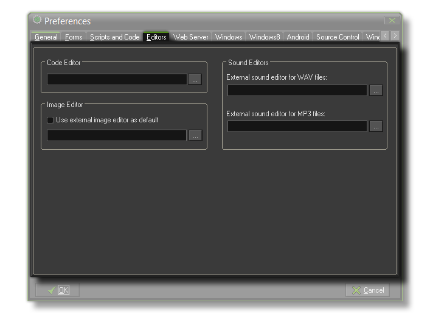

Editor Preferences
The section details the editors preferences tab.
 It may be that when making games you are more accustomed to using another suite of tools, and that you really only want to use GameMaker:Studio to bring all that work together in one place. Well, thankfully, GameMaker:Studio offers you the flexibility to keep using those tools by allowing you to define them as your default editor for the chosen resource. In this way you can have an external sound editor, or image editor etc... that will open instead of the default one whenever you open the specific resource for editing.
Code Editor
Here you can choose whether to use the built-in code editor (highly recommended) or an external editor. In the case of an external editor, the script text is saved as a *.txt file and the editor is called with this file as an argument. After editing it you should save the file and close the editor such that GameMaker:Studio can read the file back in.
Image Editor
You can also choose whether to use the built-in image editor or an external editor. In the case of an external editor, the image is saved as a *.png file and the editor is called with this file as an argument. After editing it you should save the file and close the editor such that GameMaker:Studio can read the file back in.
Sound Editors
Finally you can indicate the different external editors for the sound files you want to use asGameMaker:Studio does not contain internal sound editors yet. There are two possible editors, one each
for handling .wav and .mp3 files. In the case of an external editor, the sound is saved as a *.wav or *.mp3 file and the corresponding editor is called with this file as an argument.
After editing it you should save the file and close the editor such that GameMaker:Studio can read the file back in.